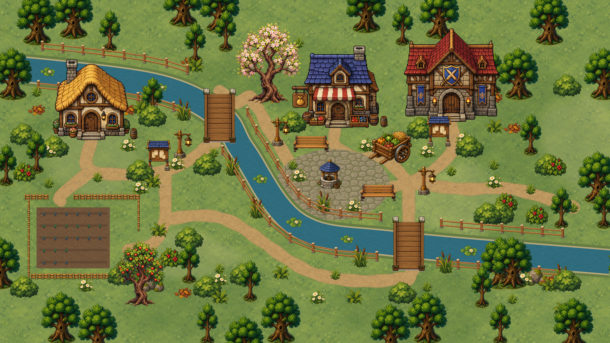
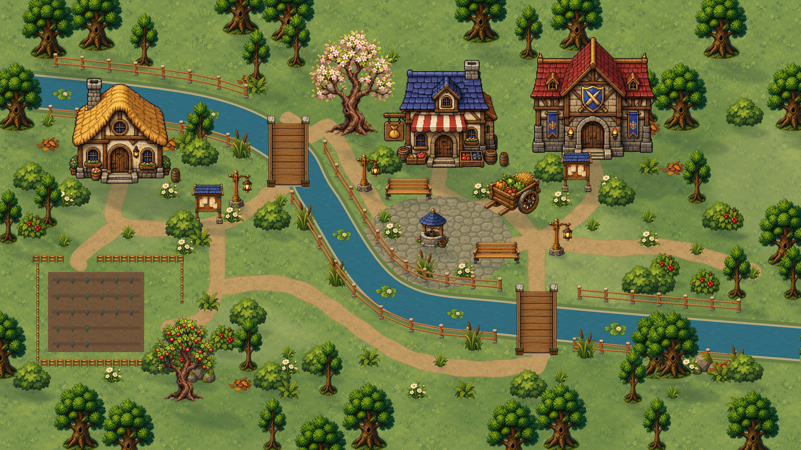

Лунная долина · детали света
Сравнение нативных рендеров 4K: спрайты и размещение совпадают.
Было · v4
Стало · v5
Дом · тень от крыши и основания


Дерево · крона и корни
Лавочка · ножки и отбрасываемая тень